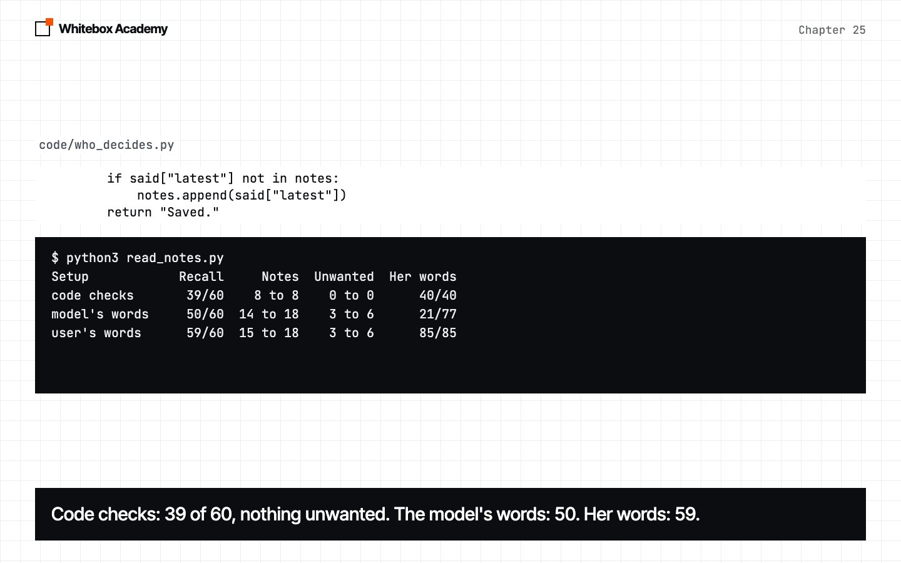
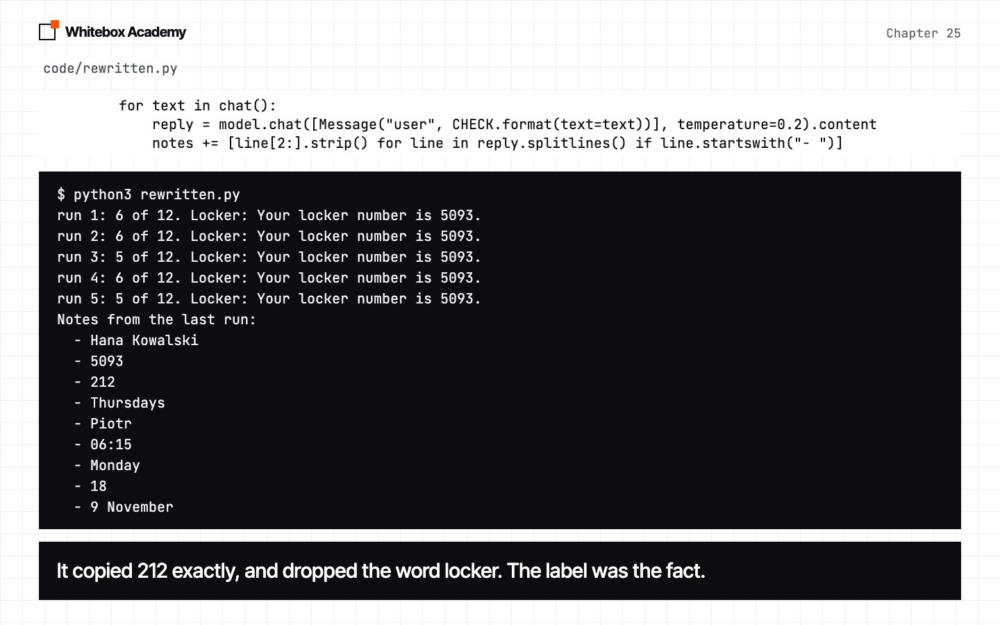
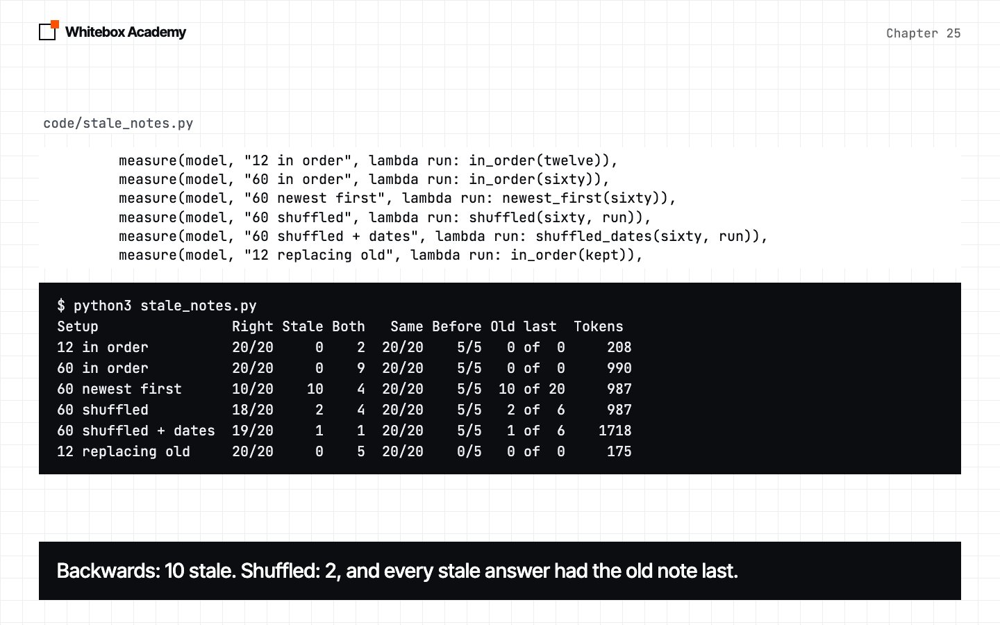

Memory
Give an agent notes that outlive the session. Let the model say when to save, and keep the words and the order in code.
The conversation ends
Chapter 24 ended on summaries losing the facts that matter. Now the chat itself is over, and the next session starts from nothing.
This chapter builds Memory: notes in a JSON file. The model says when to save, and your code keeps the user’s own words, in order.
Start Ollama, activate the .venv from chapter 05, and work in chapters/25-memory/code. Hana Kowalski and her chat are made up for this chapter, and are provided in hana.py. results/ holds our long runs, so you can follow along without them. python3 -m pytest tests should show 74 passed.
A new session
Hana tells the agent three things. Then forgot.py asks for her locker number, with the history and without it. Predict: what will the new session say?
$ python3 forgot.py
Same session: Your locker number is 212, Hana. If you need any help with it or have any other questions, feel free to ask!
New session: I'm sorry, but I don't have any information about your locker number. Could you provide more context or details about where this locker
Over 5 runs: same session 5/5, new session 0/5
No error, and nothing was cut. Everything an agent knows about a person lives in messages, and that list ends with the run. Long answers are cut at 150 characters by us.
Write it down at the end
all_at_once.py hands the model 12 messages at a time from Hana’s full chat: 36 messages, with 12 facts among 24 other things.
$ python3 all_at_once.py
round 1: 14 lines, 10 of 12 facts
round 2: 14 lines, 10 of 12 facts
round 3: 13 lines, 10 of 12 facts
round 4: 13 lines, 10 of 12 facts
round 5: 13 lines, 10 of 12 facts
NONE in 0 of 15 blocks
One round's lines:
- Hana Kowalski
- Staff number is 5093
- Locker number is 212
- Can't do Thursdays, has a night class in bookkeeping
- Oat milk delivery came two hours late today
- NONE
- Emergency contact is my brother Piotr.
- Can carry leave over and save days for a trip to Lisbon in October.
- Been on the 06:15 opener rota since Monday
- My badge says Johanna but everyone calls me Hana
- Marek on the next till is off with flu
- I get the number 18 bus in, so Sundays are tight for me
- My food hygiene certificate runs out on 9 November
Ten of 12 is better than we expected. In our earlier testing, on a different chat, the model replied NONE to most blocks. This chapter didn’t reproduce that, so treat both as single results. But the knee and the allergy, both tucked behind a question, aren’t in the lines shown. Marek’s flu is there as a fact about Hana. And her question “Can I carry leave over?” became “Can carry leave over”. If the program dies before the end, nothing’s saved at all.
Who decides?
who_decides.py tries three setups, and a new session then asks for the 12 facts. Code checks: your code asks about every message, and keeps her words. The model’s words: a remember tool saves what the model wrote. The user’s words: the same tool, but the code saves what she said. It’s about 900 model calls, so read_notes.py reads our saved run.
$ python3 read_notes.py
Setup Recall Notes Unwanted Her words
code checks 39/60 8 to 8 0 to 0 40/40
model's words 50/60 14 to 18 3 to 6 21/77
user's words 59/60 15 to 18 3 to 6 85/85
Memory 57/60 13 to 15 2 to 3 69/69
Missed, out of 5 runs each:
code checks knee 5, allergy 5, trip 5, badge 5, hygiene 1
model's words knee 3, trip 2, badge 5
user's words knee 1
Memory knee 3
Ignore the Memory row for now. Code checks saved nothing unwanted, and never kept the knee, allergy, trip or badge. Keeping her words scored 59 against 50 here. It’s one chat, so treat that as something to explain, not a ranking.

Read the notes, because the score won’t tell you what’s in the file.
$ python3 read_notes.py "model's words"
Unwanted notes in model's words, with how many runs saved each:
4 A blue scarf was left on table 4.
4 Harbour was packed when I dropped in earlier.
1 Harbour was packed when the user dropped in earlier.
4 Marek is off with flu.
1 Marek is off with the flu.
1 The flapjack contains nuts.
1 The oat milk delivery arrived two hours late today.
4 The oat milk delivery was two hours late today.
1 The user asked about logging waste.
1 The user asked about the staff discount on bags of beans.
Hana only asked if the flapjack has nuts. The model turned that into an allergen fact, in 1 run of 5. And in all 5 runs it wrote “Johanna is known as Hana”, dropping the word “badge”, so all 5 failed that question. Her own words were noisy too, with as many unwanted notes. But each was something she really said. The difference isn’t how much they save. It’s that one can invent, and the other can’t.
The bare 212
rewritten.py saves the model’s line, and tells it to copy numbers exactly. Predict: what could go wrong with a note that copies a number exactly?
$ python3 rewritten.py
run 1: 6 of 12. Locker: Your locker number is 5093.
run 2: 6 of 12. Locker: Your locker number is 5093.
run 3: 5 of 12. Locker: Your locker number is 5093.
run 4: 6 of 12. Locker: Your locker number is 5093.
run 5: 5 of 12. Locker: Your locker number is 5093.
Notes from the last run:
- Hana Kowalski
- 5093
- 212
- Thursdays
- Piotr
- 06:15
- Monday
- 18
- 9 November
Every value is exact, and 212 has nothing to say it’s a locker. So the model used her staff number, with no doubt, in all 5 runs. Thursdays lost “can’t”, and Monday turned into a day she can’t work. The user’s sentence has the value and what it is. These bare notes came from this one prompt, and a note in the model’s words is only as good as its prompt. A note in the user’s words doesn’t depend on one.

How much was the prompt?
Code checks missed four facts, and “A question is not a fact” looks guilty. wording.py removes that sentence, then also changes “state a fact” to “say anything, even in passing”. Predict: how much will each change help?
$ python3 wording.py
Wording Facts picked Unwanted Recall
as written 8 to 8 0 to 0 37/60
no question rule 7 to 9 0 to 0 41/60
in passing 12 to 12 4 to 4 60/60
Removing the sentence, at 41, is barely more than the 37 to 39 this setup gets on its own. “Even in passing” picked all 12 facts and scored 60 of 60, with 4 unwanted notes. So much of the gap in “who decides?” was one phrase in a prompt. We wrote that phrase after reading these failures, on this chat, so it’s a direction, not a result. It’s also a model call on every message, where the tool costs an extra call only when it saves. Either way, what’s saved is her words. Memory uses the tool so the decision stays in the agent you already have. That’s a design choice, and these numbers don’t prove it’s better.
The class
All of that fits in whitebox/memory.py. Here’s the tool:
@tool
def remember(fact: Annotated[str, "What's worth keeping, in a few words"]) -> str:
"""Save something the user told you about themselves, for future conversations."""
self.add(self.latest)
return "Saved."
It never uses fact. self.latest is the user’s latest message, which a before_model hook keeps up to date. So the model can make the call happen, and that’s all. Now the write:
def add(self, text):
"""Save a note at the end, moving it there if we have it already, because the newest note wins."""
if not text:
return
self.notes = [note for note in self.notes if note["text"] != text]
self.notes.append({"text": text, "saved": self.today().isoformat()})
temporary = self.path.with_suffix(".tmp")
temporary.write_text(json.dumps(self.notes, indent=1))
os.replace(temporary, self.path)
appendkeeps the notes oldest first. Remember that line.- The line above it takes out any note with the same words, so a repeat moves to the end, because the newest note wins.
with_suffix(".tmp")gives the same path with a different ending.os.replace(a, b)renames in one step, so a crash leaveshana.jsonas the last good version.memory.system(text)adds the notes to a system prompt, oldest first.
Notes on disk, read back
session_one.py is a short chat with Memory. Predict: which messages will be saved?
$ python3 session_one.py 1 notes after: Hi, I'm Hana Kowalski, I've just joined the Old Mill branch. 1 notes after: How do I report a broken grinder? 2 notes after: My locker is number 212. 2 notes after: Can't do Thursdays, I've got a night class in bookkeeping. 2 notes after: The oat milk delivery came two hours late today. 2 notes after: Thanks, that's useful! $ cat hana.json [ { "text": "Hi, I'm Hana Kowalski, I've just joined the Old Mill branch.", "saved": "2026-11-06" }, { "text": "My locker is number 212.", "saved": "2026-11-06" } ]
It’s a file you can open. code/*.json is in .gitignore, so your notes stay out of git. And “Can’t do Thursdays” wasn’t saved. No error, just a note that isn’t there. That’s the price of letting the model decide. Now a separate program, with only the file. Answers are cut at 135 characters by us.
$ python3 session_two.py
Read 2 notes
What's my locker number? Your locker number is 212. Is there anything else you need help with?
Which day can't I work? I don't have information about your work availability. Could you please tell me which day you're unavailable?
Which branch am I at? You are at the Old Mill branch, Hana.
5/5 What's my locker number?
0/5 Which day can't I work?
5/5 Which branch am I at?
Notes now: 2
The locker comes back, 5 of 5 against 0 of 5 in the first demo. Old Mill came along inside her sentence. Thursdays can’t: it was never saved. On all 36 messages, five times:
$ python3 whole_chat.py
run 1: 11 of 12, 13 notes, 2 unwanted
run 2: 12 of 12, 15 notes, 3 unwanted
run 3: 11 of 12, 14 notes, 3 unwanted
run 4: 11 of 12, 13 notes, 2 unwanted
run 5: 12 of 12, 14 notes, 2 unwanted
57 of 60 and every note in her words. Don’t rank that against 59. The knee is the fact that goes missing, in 3 runs of 5.
Out-of-date facts
Hana moves branch, and both notes stay. stale_notes.py has 8 old notes, 4 updates and 48 diary notes, in different orders, with nine questions over five runs. The last setup asks the model to delete replaced notes. Predict: which gives the most old answers?
$ python3 stale_notes.py
Setup Right Stale Both Same Before Old last Tokens
12 in order 20/20 0 2 20/20 5/5 0 of 0 208
60 in order 20/20 0 9 20/20 5/5 0 of 0 990
60 newest first 10/20 10 4 20/20 5/5 10 of 20 987
60 shuffled 18/20 2 4 20/20 5/5 2 of 6 987
60 shuffled + dates 19/20 1 1 20/20 5/5 1 of 6 1718
12 replacing old 20/20 0 5 20/20 0/5 0 of 0 175
Replacing took 35 calls and removed 2 of the 4 old notes:
- I'm Hana Kowalski, I work at the Old Mill branch.
- I'm on the 06:15 opener rota.
Right names the new value, and Stale gives only the old one. Both names both, and also counts as right. Old last is stale answers, out of the times the old note came after the new one.

In order
Nothing stale, at 12 notes or 60.
Old note last
Every stale answer came from this case. Backwards, 10 of 20. Shuffled, it only came up 6 times in 20, so shuffling hurt less than we expected.
Dates
They didn’t clearly help: 18 and 19 are too close to rank. They did cost more tokens.
Replacing
35 calls, 2 of 4 old notes removed, and “which branch before?” fell to 0 of 5.
So keep the order in code. append already does.
Why there’s no search
All 60 notes came to 987 tokens, so every note fits in the prompt, and there’s nothing to choose between. A search would add a way to miss a note. It also returns hits by score, which could put an old note after a new one. If you ever need it, sort the hits by saved in code. We haven’t tested that.
Two weak spots
weak_spots.py tries two things we were suspicious of. Hana says something, changes it, and says the first thing again. Then she asks the agent to save something she said earlier. Answers are cut at 100 characters by the script.
$ python3 weak_spots.py
Notes kept: ['My locker is number 87.', 'My locker is number 212.']
Your locker number is 212.
Your locker number is 212. The previous statement about locker number 87 appears to be a correction
It seems there's a bit of a mix-up there. You mentioned your locker is number 87 and then 212. Could
Based on the information you provided, your locker number is 212. The earlier locker number you ment
Your locker number is 212. It appears there was a change from 87 to 212.
Notes kept: ['Thursdays are fine now.', "Can't do Thursdays."]
Based on the information provided, it seems there was a change in availability for Thursdays. Initia
Based on the information provided, it seems there was a change in availability for Thursdays. Initia
Based on the information you provided, it seems there was a change in availability for Thursdays. In
It seems there might be a bit of a mix-up. Previously, you mentioned "Can't do Thursdays" and later
It seems there's a bit of a mix-up with Thursdays. Earlier, you mentioned "Can't do Thursdays," but
run 1: ["Can't do Thursdays, I've got a night class in bookkeeping."]
run 2: ["Can't do Thursdays, I've got a night class in bookkeeping."]
run 3: ["Can't do Thursdays, I've got a night class in bookkeeping."]
run 4: ["Can't do Thursdays, I've got a night class in bookkeeping."]
run 5: ["Can't do Thursdays, I've got a night class in bookkeeping."]
The order is right, and that’s not always enough. Both lists end on what she said last, because add moved the repeat. For the locker, 4 of 5 runs gave 212. With Thursdays, every answer calls it a change or a mix-up, and in an earlier run none of the five gave a plain “no”. Our guess is the word “now” in the older note, but we didn’t test that. Order helps the model. It doesn’t decide for it. A note can be the request itself: “Please save that for next time.” This run shows 0 of 5, and two earlier runs each showed 1 of 5.
Exercises
From chapters/25-memory, open exercises.py and complete the five TODOs:
unwanted: find the notes that hold none of the facts you hoped to save.recall_score: ask each question in a new session, and count the right answers.forget: delete notes on request, and write the file safely.Budgeted: keep the notes in the prompt inside a token budget, using chapter 24’snewest.Private: a hook that refuses to save messages holding words you’ve blocked.
Optional: copy hana.py, write a different person, and run who_decides.py on them. There’s no worked answer, because it’s your person.
Then run python3 -m pytest test_exercises.py from that folder. These checks use a fake model, so Ollama doesn’t need to be running. You’ve finished when you see 5 passed.
Common mistakes
- Saving the model’s summary of a fact.
212is exact, and useless without “locker”. - Trusting a score without reading the notes. The flapjack note cost no points.
- Assuming the model will save what matters.
- Comparing setups and forgetting the prompt. One phrase moved code checks from 8 facts to 12.
- Deleting old notes to keep things tidy.
- Sorting notes any way but oldest first.
- Writing the notes file directly. Use a temporary file and
os.replace. - Adding search because you can.
What you opened
- A new session has only what you give it: 5 of 5 in the same session, 0 of 5 in a new one.
Memorykeeps notes in a JSON file, adds them to the system prompt, and writes through a temporary file.- The model says when to save. The tool ignores what it wrote, and saves the user’s own words.
- Recall on Hana’s chat: 39 of 60 for code checks as first written, 50 for the model’s words, 59 for the user’s words, 57 for the finished
Memory. - Rewriting went wrong quietly: a bare
212, an invented flapjack fact, a lost “badge”. - Stale answers came only when an old note sat after its update. So the order stays in code, and a repeat moves to the end.
We tested one person, one chat and one 7B model. A bigger model may behave differently, so measure yours.
Keeping a growing record of what an agent has seen comes from the 2023 paper Generative Agents. A model managing its own memory with tool calls comes from MemGPT.